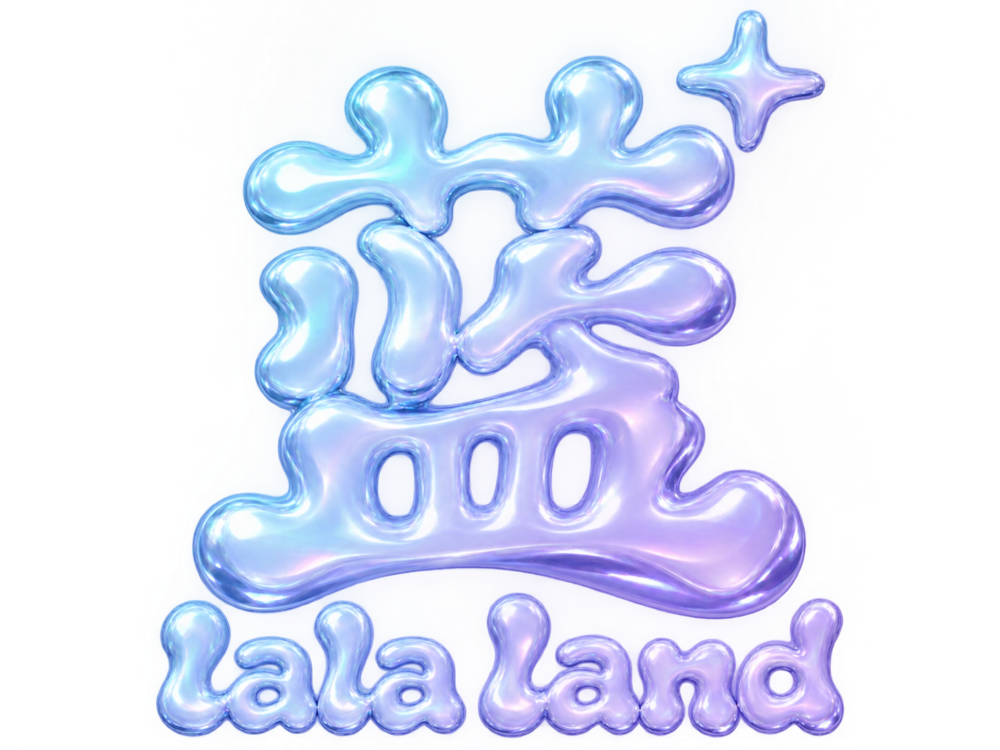
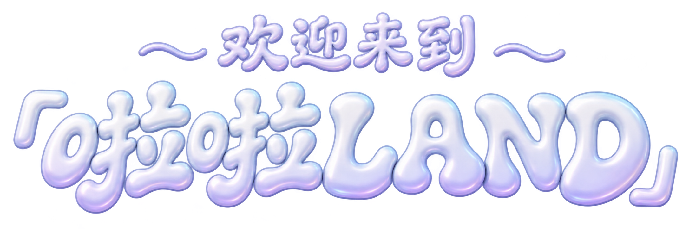
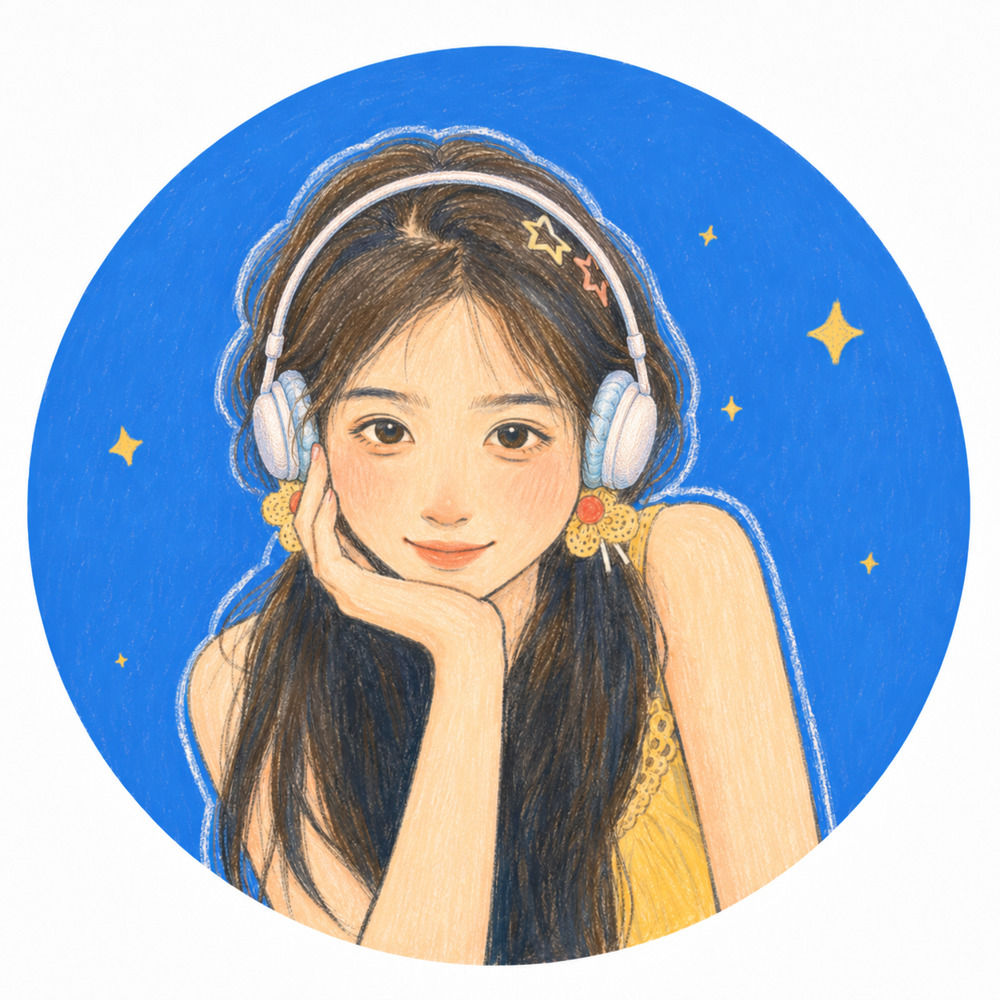

《遇见东方》写作档案
万里茶道采访、编辑与文章页面。
打开 →
lala land

打开耳机仓，让好奇心登岛。
WHU-NJU。养成系博主，在广阔天地寻找自己。
我把日常、vlog、旅行、校园和 AI 协作都收进自己的小岛里。这里是主页，也是一个慢慢生长的个人世界。
从知识服务视角研究线上中文写作课的供给端模式，观察传统媒体、互联网平台和个人 IP 如何把经验、陪跑和工具变成课程服务。
2022-2026 武汉大学文学院，2026-2029 南京大学文学院。关键词：中文、现当代文学、内容运营、用户研究、AI 产品、写作和旅行。

收录于《遇见东方：中外青年万里茶道考察纪行（中英图文版）》。蓝蓝参与采访、编辑与写作，从宜昌茶路现场观察传统如何在当代继续更新。
文学训练给我问题意识，内容创作让我靠近真实的人，AI 则把许多“好想做”变成今天就能打开的原型。


我参与开发的情感陪伴智能体，将语音、Live2D、仿生头与灵巧手连接起来，让比心、双人写字与烟花成为可参与的互动体验。
参与《遇见东方：中外青年万里茶道考察纪行（中英图文版）》采访、编辑与写作。署名文章《茶路贯古今，“新火”试“新茶”》从宜昌茶路现场观察传统如何更新。
新版北京四日工作台把真实目的地研究、天气、闭馆日、环球影城、手机出片、预算、预约、打包和 Todo 放进同一套可执行 H5。
从供给端、个人 IP、陪跑服务和平台工具切入，把散乱市场信息整理成可比较的产品结构。
WHU-NJU，养成系内容创作者。分享校园、旅行、日常与 vlog；累计内容阅读量 100w+，抖音获赞 10w+。